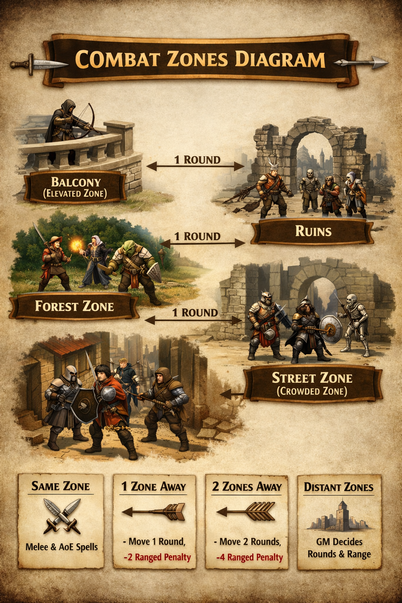

A zone represents a distinct area of the battlefield. It may be any clearly defined space: a sheet of paper, a marked section of the table, or a naturally separated part of the environment such as a room, balcony, or street segment.
Zones should be arranged so players can easily understand which characters stand together and which areas are separated by distance, obstacles, or terrain.

Within a zone:
A character may move freely inside their current zone. If the zone is smaller than the character's
movement distance (e.g., 12 m), they can reach any point within the zone during a single round.
Between zones:
Moving from one zone to an adjacent zone takes a full round. A charge is possible if the
target zone is directly adjacent and the character intends to make an attack upon entering.
Longer distances:
Non-adjacent zones (upper floors, distant rooftops, opposite sides of a street, etc.) may require
multiple rounds of movement. The GM determines how many rounds are needed based on terrain and distance.
To perform a backstab, the character must first make a Hide in Shadows roll. Subtract either the target's level or their Wisdom modifier—whichever is higher—from the result.
If the roll succeeds, the character may slip behind the target unnoticed and make an attack. A successful backstab grants additional effects as described in the class rules.
Ranged attacks suffer a -2 penalty for every zone of distance between attacker and target, unless both are in the same zone.
Example: An enemy wearing light armor (AC 12). An attack from an adjacent zone applies a -2 penalty, effectively increasing the AC to 14. An attack from two zones away applies a -4 penalty, requiring a roll against AC 16.
All area-of-effect spells (AoE) affect the entire targeted zone. Every creature within that zone is automatically affected.
The GM may decide whether cover, obstacles, or elevation reduce or negate the spell's effect.
Engaged:
If two opposing groups occupy the same zone and are in direct melee combat, they are considered
engaged. Leaving an engaged zone may provoke opportunity attacks.
Zone Traits:
Zones may have special properties such as dark, tight, slippery,
burning, or crowded. These traits can modify rolls, restrict movement,
or impose disadvantage on certain actions.